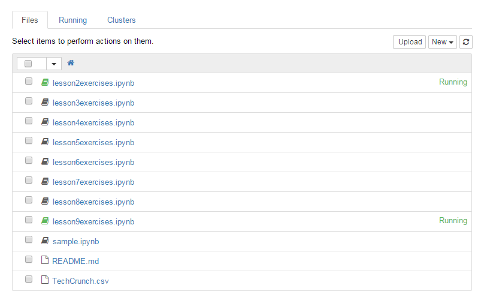

Open a new browser tab to CoderGirl Jupyter Temporary Notebooks.
If that site isn't working, see instructions on using try.jupyter.org instead.
(Warning: the alternative has a 10-minute idle timeout! You can easily lose your work there.)
Jupyter will show a list of files. These are the lesson files you will work in.
They will save your work, but it will only last as long as you are still working on them.
Once you are idle for 1 hour, the session will end. That means when you walk away for
dinner or sleep, the files will go away. We'll show you how to download
and save your work, so you can continue across several days.
But first, let's see what Jupyter can do.

Click "New" to start a new notebook from scratch. The notebook looks like this.
You can click on "Untitled" to change the filename. You might want to put
your name in there, like Jenny Practice or whatever you like.
There is a File menu. It has a Save-and-Checkpoint menu item in it. Click that now to save your new notebook.
Each cell or box is a place where you can type in source code.
Type this in the box:
After you type it in, press control-enter to run it. (If you're on a tablet without control or alt keys, click the "Play" icon instead.) See the message show up underneath the box?
Let's do another example. But first we need another box!
Click into the box you already typed in. This time, run it by pressing
alt-enter.
Notice that it creates a new blank box after, for you to write in.

Type this into the second box, and run it with control-enter or alt-enter. Type carefully!
If you make a mistake or get an error, click into the box and fix your typing. Then run it
again with control-enter.

Now, let's learn how to download your work-in-progress.
Next, let's restore your work.
Now click on the Jupyter logo in the upper-left, to go back to the list of files. See the list of lesson files? They're numbered. Each lesson goes with one of the pages on this web site. There are practice problems inside each lesson file.